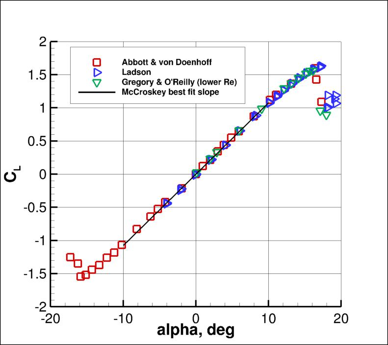
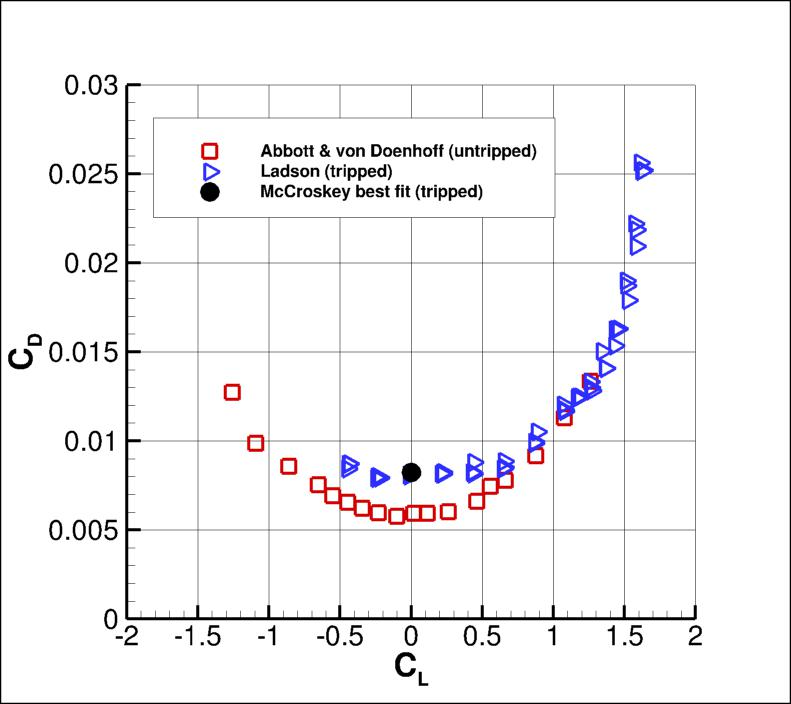
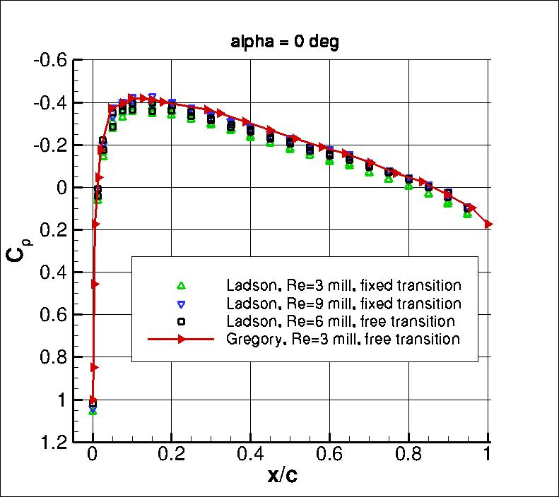
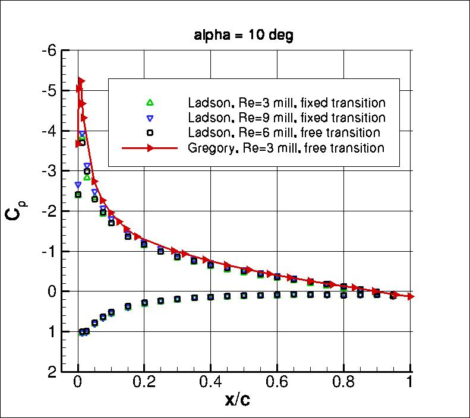
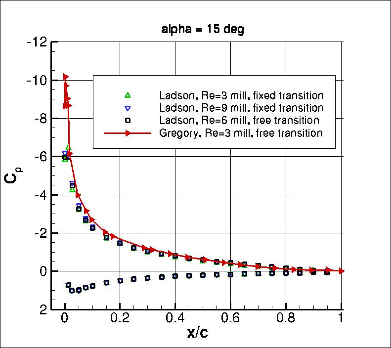

|
Langley Research CenterTurbulence Modeling Resource |
Return to: Turbulence Modeling Resource Home Page
2DN00: 2D NACA 0012 Airfoil Validation Case
The purpose here is to provide a validation
case for turbulence models. Unlike verification, which seeks to establish that a model has been implemented
correctly, validation compares CFD results against data in an effort to establish a model's
ability to reproduce physics. A large sequence of nested grids
of the same family are provided here if desired. Data are also provided for comparison.
For this particular "essentially incompressible" NACA 0012 airfoil case, the data are from experiments.
For the purposes of this validation, the definition of the NACA 0012 airfoil
is slightly altered from the original definition so that the airfoil closes at chord=1 with a sharp trailing edge.
To do this, the exact NACA 0012 formula
y= +- 0.6*[0.2969*sqrt(x) - 0.1260*x - 0.3516*x2 + 0.2843*x3 - 0.1015*x4]
is used to create an airfoil between x=0 and x=1.008930411365 (the T.E. is sharp
at this location). Then the airfoil is scaled down by
1.008930411365. Thus, the resulting airfoil is a perfect scaled copy of the 0012, with maximum thickness of approximately 11.894% relative
to its chord (the original NACA 0012 has a maximum thickness of 12% relative to its blunted chord, but it, too,
has a maximum thickness of 11.894% relative to its chord extended to 1.008930411365).
The revised definition is:
y= +- 0.594689181*[0.298222773*sqrt(x) - 0.127125232*x
- 0.357907906*x2 + 0.291984971*x3
- 0.105174606*x4]
A set of surface points that have been defined using this altered formula are provided here, if desired:
n0012points_superbig_clust_fix.dat.
NOTE: Prior to 6/23/2014, there was a typo in the original scaled formula provided on this page. It was written:
y= +- 0.594689181*[0.298222773*sqrt(x) - 0.127125232*x
- 0.357907906*x2 + 0.291984971*x3
- 0.105174696*x4] (typo underlined).
With the typo, there was a slight order 10-8
non-closure at the trailing edge (T.E.) (and very small influence throughout). At this time, the provided grids
in the link below have used the incorrect formula and were closed at the T.E. by setting y to be
exactly 0 at x=1. However, the influence of the typo is insignificant.
Note that the grids supplied in the link below are considered to be appropriate for the
level of validation explored here, but are likely not fine enough when high accuracy is required.
Convergence properties ("goodness" of
results as a function of grid size) are explored in more detail with different grid families in
Numerical Analysis of 2D NACA 0012 Airfoil Validation Case.
The finer grids on the "Numerical Analysis" page also include the correction in the scaled NACA 0012 formula.
The turbulent NACA 0012 airfoil case should be run at
essentially incompressible conditions (the recommendation here is to run M = 0.15 in compressible CFD codes).
The Reynolds number per chord is Re = 6 million.
Boundary layers should be fully turbulent over most of the airfoil.
Inflow conditions for the turbulence variables should be reported.
To minimize issues associated with
effect of the farfield boundary (which can particularly
influence drag and lift levels
at high lift conditions), the farfield boundary in the grids provided have been located almost
500 chords away from the airfoil. Otherwise, a "farfield point vortex" boundary
condition correction should be employed (see Thomas and Salas, AIAA Journal 24(7):1074-1080, 1986,
https://doi.org/10.2514/3.9394).
The following plot shows the layout of the provided NACA 0012
grids, along with typical boundary conditions.
(Note that particular variations of the BCs at the farfield boundaries
may also work and yield similar results for this problem.)
Note: significantly finer grids for this NACA 0012 case can be found from the:
Numerical Analysis of 2D NACA 0012 Airfoil Validation Case page.
The quantities of interest for comparison are as follows:
There are experimental data available for validation, but it should be recognized
that two-dimensional experiments are extremely difficult to achieve,
particularly at higher angles of attack approaching stall.
Therefore, the experimental data provided here should be used with that in mind.
There are no known surface skin friction data available for this case for validation;
however, CFD predictions of this quantity are still of interest.
Experimental curves for comparison at Re=6 million (essentially incompressible conditions)
are given below.
As can be seen, there are some differences between various experimental results.
In particular, these differences occur near stall where the experiments are
no doubt very far from being two-dimensional any more.
A useful paper that discusses many NACA 0012 experiments conducted over the years is:
McCroskey, W. J., "A Critical Assessment of Wind Tunnel Results for the NACA 0012
Airfoil," AGARD CP-429, July 1988; also NASA TM 100019, October 1987
https://ntrs.nasa.gov/citations/19880002254.
In particular, it is important to note that experimental drag coefficient levels are
greatly affected by tripping the boundary layer at Reynolds numbers in this range. For
comparing with "fully turbulent" CFD drag results, tripped experimental data are
more appropriate than untripped.


The Abbott and von Doenhoff data (Abbott, I. H. and von Doenhoff, A. E., "Theory
of Wing Sections," Dover Publications, New York, 1959) were not tripped.
The Gregory and O'Reilly data (Gregory, N. and O'Reilly, C. L., "Low-Speed
Aerodynamic Characteristics of NACA 0012 Aerofoil Sections, including the Effects
of Upper-Surface Roughness Simulation Hoar Frost," R&M 3726, Jan 1970)
were tripped, but were at a lower Re of 3 million. Lift data are not
affected too significantly between 3 million and 6 million, but drag data are (e.g.,
according to McCroskey, tripped CD,0 at Re=3 million is about 10% higher
than tripped CD,0 at Re=6 million).
The Ladson tripped data (Ladson, C. L., "Effects of Independent Variation of Mach and
Reynolds Numbers on the Low-Speed Aerodynamic Characteristics of the NACA 0012
Airfoil Section," NASA TM 4074, October 1988,
https://ntrs.nasa.gov/citations/19880019495)
appear to be the most appropriate
of these data sets for comparison with fully turbulent CFD forces at Re=6 million.
For comparing with surface pressure coefficients, data of
Ladson et al (Ladson, C. L., Hill, A. S., and Johnson, Jr., W. G., "Pressure
Distributions from High Reynolds Number Transonic Tests of an NACA 0012 Airfoil in
the Langley 0.3-Meter Transonic Cryogenic Tunnel," NASA TM 100526, December 1987,
https://ntrs.nasa.gov/citations/19880009181)
do not appear to resolve the leading edge upper surface pressure
peak well. Gregory and O'Reilly CP data (at Re=3 million) appear to be better resolved.
The Gregory and O'Reilly data also show some noticeable differences
from the Ladson et al pressure data levels over the front half of the airfoil
at alpha=10 and 15.
It is believed that the Gregory data are likely more two-dimensional and hence more appropriate
for CFD validation of surface pressures.



The experimental data for comparison are provided here:
What to Expect:
(Other turbulence model results may be added in the future.)
Note that the OVERFLOW code has documented its results for this validation case (for the SA-noft2, SST, and SST-V
turbulence models) in NAS Technical Paper 2016-01 (pdf file)
(18.3 MB) by Jespersen, Pulliam, and Childs.
Return to: Turbulence Modeling Resource Home Page
Recent significant updates: Responsible NASA Official:
Ethan Vogel

where amax is the maximum angle of attack at which the CFD yields steady-state
results with no force oscillations.
RESULTS
LINK TO EQUATIONS
MRR Level
SA
SA eqns
4
SA-RC
SA-RC equations
3
SSTm
SSTm eqns
3
SST-Vm
SST-Vm eqns
3
SSG/LRR-RSM-w2012
SSG/LRR-RSM-w2012 eqns
3
Wilcox2006-klim-m
Wilcox2006-klim-m eqns
2
K-kL-MEAH2015m
K-kL-MEAH2015m eqns
3
EASMko2003-S
EASMko2003-S eqns
1
K-e-Rt
K-e-Rt eqns
1
09/08/2022 - added the altered 0012 surface points file
08/28/2020 - changed SST-V naming to SST-Vm
08/01/2019 - included more of the experimental data files plotted (note some are digitized, so are only approximate)
06/28/2016 - added SA-RC results
06/23/2014 - correction to scaled NACA 0012 formula
01/28/2014 - new link showing effect of farfield boundary & link to numerics page
Page Curator:
Clark Pederson
Last Updated: 09/08/2022